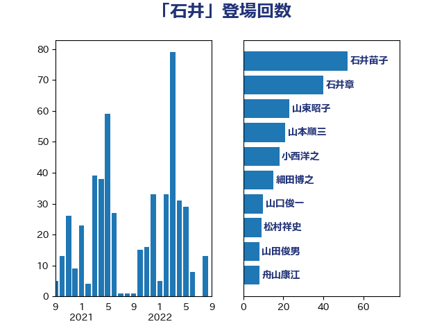

単語「石井」

| 石井苗子 | 日本維新の会 | 52 回 |
| 石井章 | 日本維新の会 | 40 回 |
| 山東昭子 | 自由民主党 | 23 回 |
| 山本順三 | 自由民主党 | 21 回 |
| 小西洋之 | 立憲民主党 | 18 回 |
| 細田博之 | 自由民主党 | 15 回 |
| 山口俊一 | 自由民主党 | 10 回 |
| 松村祥史 | 自由民主党 | 9 回 |
| 山田俊男 | 自由民主党 | 8 回 |
| 舟山康江 | 国民民主党 | 8 回 |
| 古屋範子 | 公明党 | 6 回 |
| 小泉進次郎 | 自由民主党 | 6 回 |
| 山本剛正 | 日本維新の会 | 6 回 |
| 石井正弘 | 自由民主党 | 6 回 |
| 石井浩郎 | 自由民主党 | 6 回 |
| 石橋通宏 | 立憲民主党 | 6 回 |
| 高木毅 | 自由民主党 | 6 回 |
| 岸田文雄 | 自由民主党 | 5 回 |
| 斉藤鉄夫 | 公明党 | 5 回 |
| 石井啓一 | 公明党 | 5 回 |
| 野田国義 | 立憲民主党 | 5 回 |
| 長浜博行 | 無所属 | 5 回 |
| 鶴保庸介 | 自由民主党 | 5 回 |
| 佐藤信秋 | 自由民主党 | 4 回 |
| 杉本和巳 | 日本維新の会 | 4 回 |
| 松下新平 | 自由民主党 | 4 回 |
| 梶山弘志 | 自由民主党 | 4 回 |
| 海江田万里 | 立憲民主党 | 4 回 |
| 西銘恒三郎 | 自由民主党 | 4 回 |
| 赤羽一嘉 | 公明党 | 4 回 |
| 塩田博昭 | 公明党 | 3 回 |
| 大口善徳 | 公明党 | 3 回 |
| 平木大作 | 公明党 | 3 回 |
| 木原誠二 | 自由民主党 | 3 回 |
| 杉尾秀哉 | 立憲民主党 | 3 回 |
| 林芳正 | 自由民主党 | 3 回 |
| 横山信一 | 公明党 | 3 回 |
| 浦野靖人 | 日本維新の会 | 3 回 |
| 石井拓 | 自由民主党 | 3 回 |
| 礒崎哲史 | 国民民主党 | 3 回 |
| 秋野公造 | 公明党 | 3 回 |
| 紙智子 | 日本共産党 | 3 回 |
| 青木愛 | 立憲民主党 | 3 回 |
| 中島克仁 | 立憲民主党 | 2 回 |
| 中曽根弘文 | 自由民主党 | 2 回 |
| 井上信治 | 自由民主党 | 2 回 |
| 原口一博 | 立憲民主党 | 2 回 |
| 坂本哲志 | 自由民主党 | 2 回 |
| 太田房江 | 自由民主党 | 2 回 |
| 安江伸夫 | 公明党 | 2 回 |
| 小熊慎司 | 立憲民主党 | 2 回 |
| 小野田紀美 | 自由民主党 | 2 回 |
| 後藤茂之 | 自由民主党 | 2 回 |
| 新妻秀規 | 公明党 | 2 回 |
| 本庄知史 | 立憲民主党 | 2 回 |
| 梅村聡 | 日本維新の会 | 2 回 |
| 森山浩行 | 立憲民主党 | 2 回 |
| 滝波宏文 | 自由民主党 | 2 回 |
| 石原正敬 | 自由民主党 | 2 回 |
| 福岡資麿 | 自由民主党 | 2 回 |
| 細田健一 | 自由民主党 | 2 回 |
| 若松謙維 | 公明党 | 2 回 |
| 薗浦健太郎 | 自由民主党 | 2 回 |
| 谷田川元 | 立憲民主党 | 2 回 |
| 野村哲郎 | 自由民主党 | 2 回 |
| 長妻昭 | 立憲民主党 | 2 回 |
| 須藤元気 | 無所属 | 2 回 |
| ながえ孝子 | 無所属 | 1 回 |
| 三ッ林裕巳 | 自由民主党 | 1 回 |
| 上月良祐 | 自由民主党 | 1 回 |
| 中山展宏 | 自由民主党 | 1 回 |
| 中根一幸 | 自由民主党 | 1 回 |
| 伊藤岳 | 日本共産党 | 1 回 |
| 伊藤達也 | 自由民主党 | 1 回 |
| 吉川赳 | 無所属 | 1 回 |
| 吉田統彦 | 立憲民主党 | 1 回 |
| 堀井巌 | 自由民主党 | 1 回 |
| 塩崎彰久 | 自由民主党 | 1 回 |
| 塩川鉄也 | 日本共産党 | 1 回 |
| 大西健介 | 立憲民主党 | 1 回 |
| 小宮山泰子 | 立憲民主党 | 1 回 |
| 小林鷹之 | 自由民主党 | 1 回 |
| 山田宏 | 自由民主党 | 1 回 |
| 山谷えり子 | 自由民主党 | 1 回 |
| 岩渕友 | 日本共産党 | 1 回 |
| 本田顕子 | 自由民主党 | 1 回 |
| 東徹 | 日本維新の会 | 1 回 |
| 柳ヶ瀬裕文 | 日本維新の会 | 1 回 |
| 柴田巧 | 日本維新の会 | 1 回 |
| 森まさこ | 自由民主党 | 1 回 |
| 櫻井周 | 立憲民主党 | 1 回 |
| 武田良太 | 自由民主党 | 1 回 |
| 浜田聡 | NHK党 | 1 回 |
| 浜田靖一 | 自由民主党 | 1 回 |
| 渡海紀三朗 | 自由民主党 | 1 回 |
| 湯原俊二 | 立憲民主党 | 1 回 |
| 熊野正士 | 公明党 | 1 回 |
| 玄葉光一郎 | 立憲民主党 | 1 回 |
| 田村貴昭 | 日本共産党 | 1 回 |
| 矢倉克夫 | 公明党 | 1 回 |
| 石井準一 | 自由民主党 | 1 回 |
| 石川博崇 | 公明党 | 1 回 |
| 磯崎仁彦 | 自由民主党 | 1 回 |
| 福重隆浩 | 公明党 | 1 回 |
| 竹内真二 | 公明党 | 1 回 |
| 笹川博義 | 自由民主党 | 1 回 |
| 菅義偉 | 自由民主党 | 1 回 |
| 萩生田光一 | 自由民主党 | 1 回 |
| 西村康稔 | 自由民主党 | 1 回 |
| 西田昌司 | 自由民主党 | 1 回 |
| 逢沢一郎 | 自由民主党 | 1 回 |
| 進藤金日子 | 自由民主党 | 1 回 |
| 里見隆治 | 公明党 | 1 回 |
| 金城泰邦 | 公明党 | 1 回 |
| 鈴木俊一 | 自由民主党 | 1 回 |
| 長谷川岳 | 自由民主党 | 1 回 |
| 青山繁晴 | 自由民主党 | 1 回 |
| 高村正大 | 自由民主党 | 1 回 |
| 高良鉄美 | 無所属 | 1 回 |